Normal Wright workspace and actual isolated engineering run. No mocked routes or physical action.
Status: pass
The updated package opens through the normal workspace.
Expected: Existing workspace navigation visible.
Actual: Normal Workflows and Files controls are available.
raw 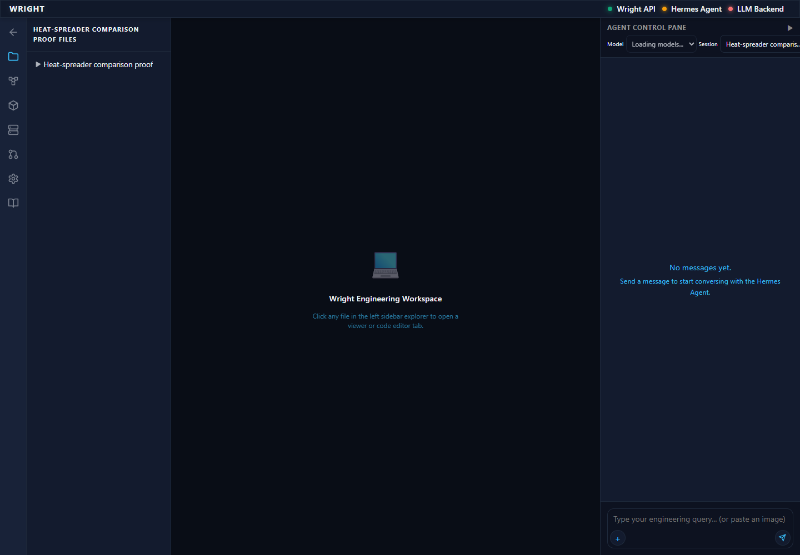
annotated 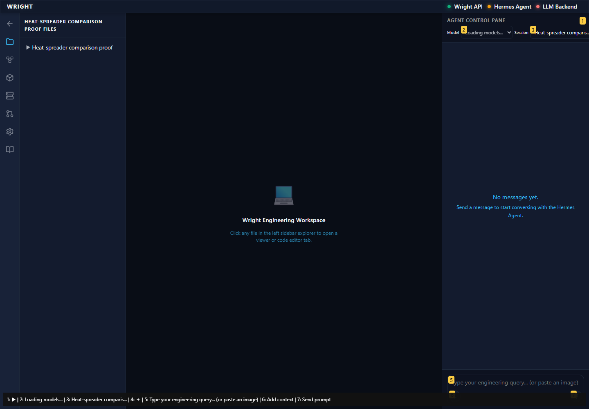
The same exact results render with the desktop file panel open.
Expected: Exact recorded results and docked navigation.
Actual: 18 exact result identities; docked file panel 260px wide.
raw 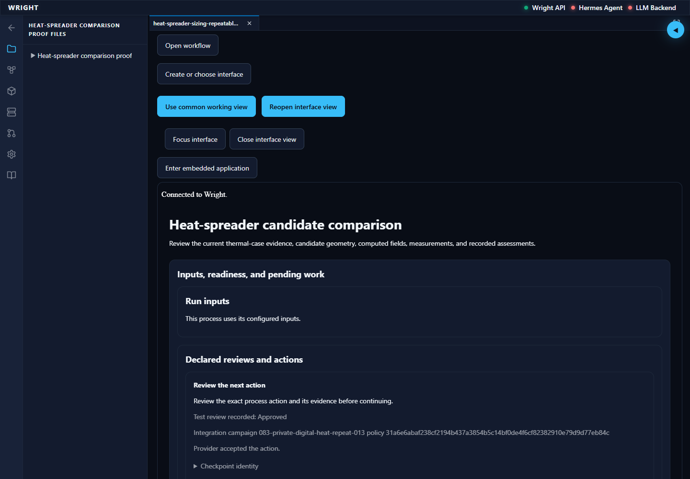
annotated 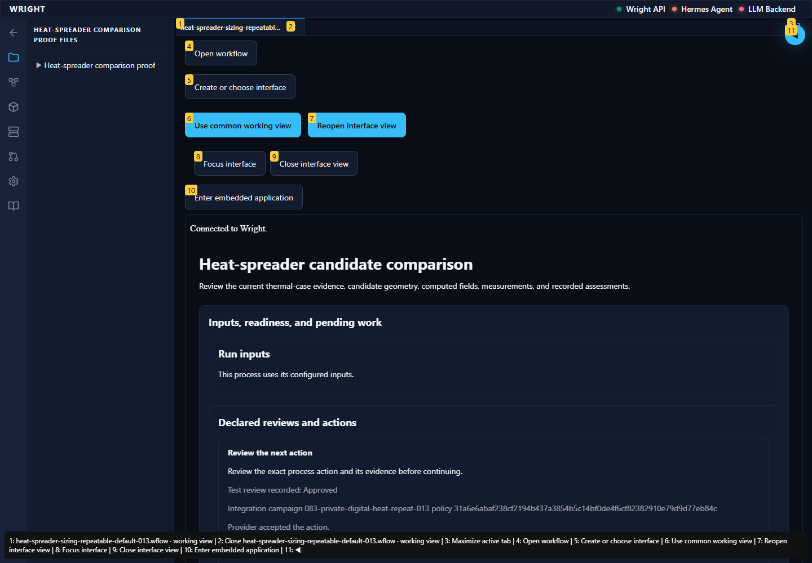
Navigation passes the scoped accessibility scan and Open workflow returns to the existing editor.
Expected: Zero scoped automated violations and existing editor available.
Actual: Navigation has zero WCAG A/AA violations; Diagram, Source and Use saved process remain available.
raw 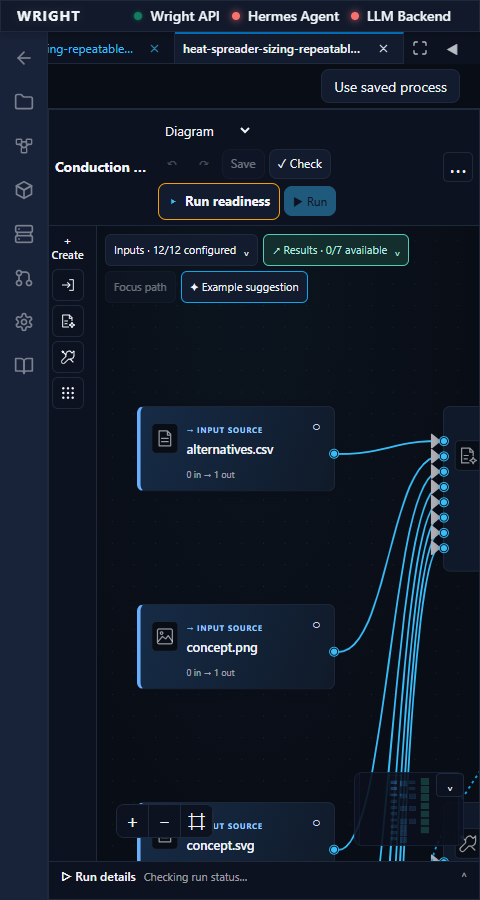
annotated 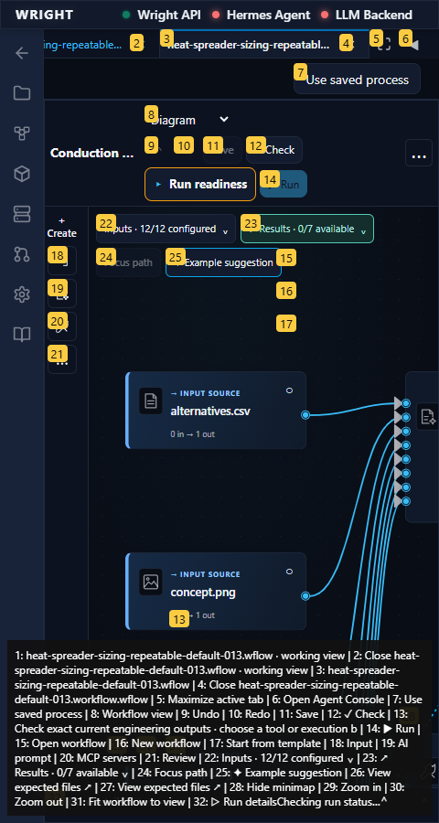
The common view shows the same exact engineering outputs at the available compact width.
Expected: Same exact recorded results; full available width and no outer overflow.
Actual: 18 exact common results; document 432px with 432px scroll width.
raw 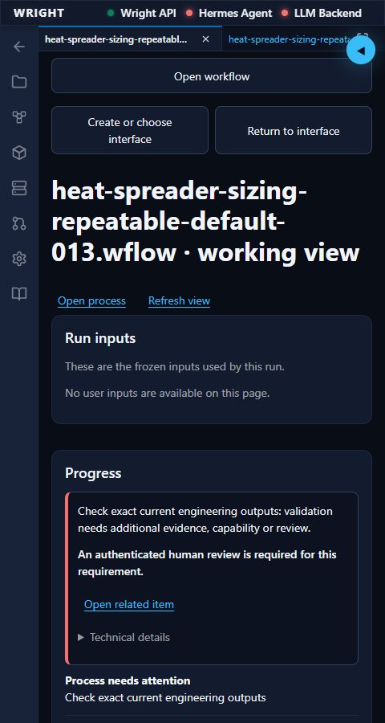
annotated 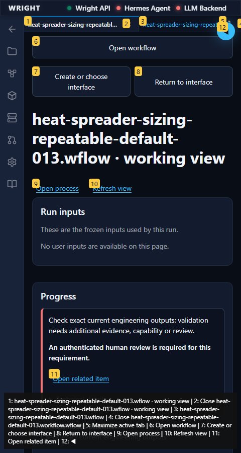
The preview remains a workspace tab, with the same results and accessible Files navigation.
Expected: Read-only preview of the same UI revision/run and exact results; navigation return works.
Actual: Backend read-only binding and 18 exact results verified; preview has the available width and Files returns focus.
raw 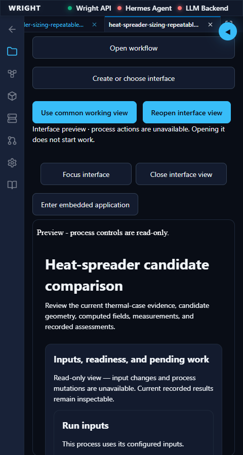
annotated 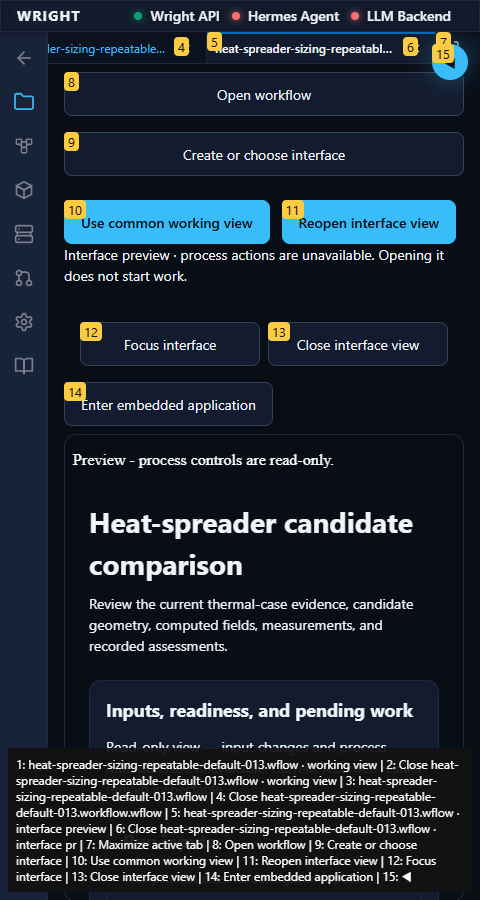
The browser reports tab zoom two while its layout viewport halves and pinch scale remains one.
Expected: Browser zoom 2, CSS viewport 720px, pinch scale 1, exact read-only preview results.
Actual: Browser zoom 2; viewport 720px; pixel ratio 2; page scale 1; 18 exact results.
annotated 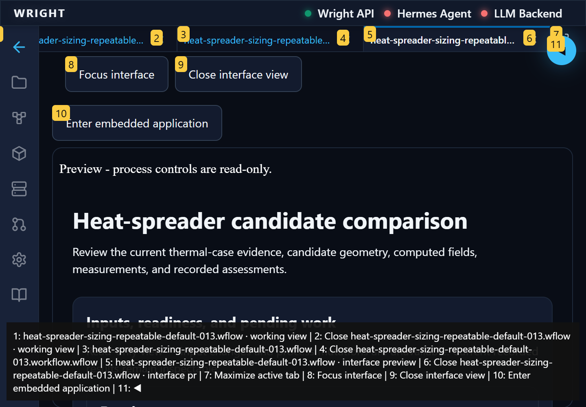
The same saved interface and keyboard navigation remain available at browser zoom two.
Expected: Exact saved results; Files restores keyboard focus.
Actual: All 18 exact results remain available; Files opens and Escape restores focus.
annotated 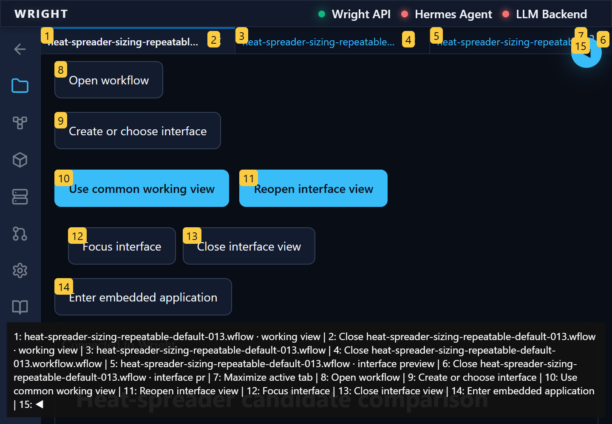
The common fallback preserves exact results and wraps its content within the available workspace.
Expected: Exact results, no outer overflow, no detected WCAG A/AA violations.
Actual: 18 exact results; 672px client and 672px scroll width; zero scoped automated violations.
annotated 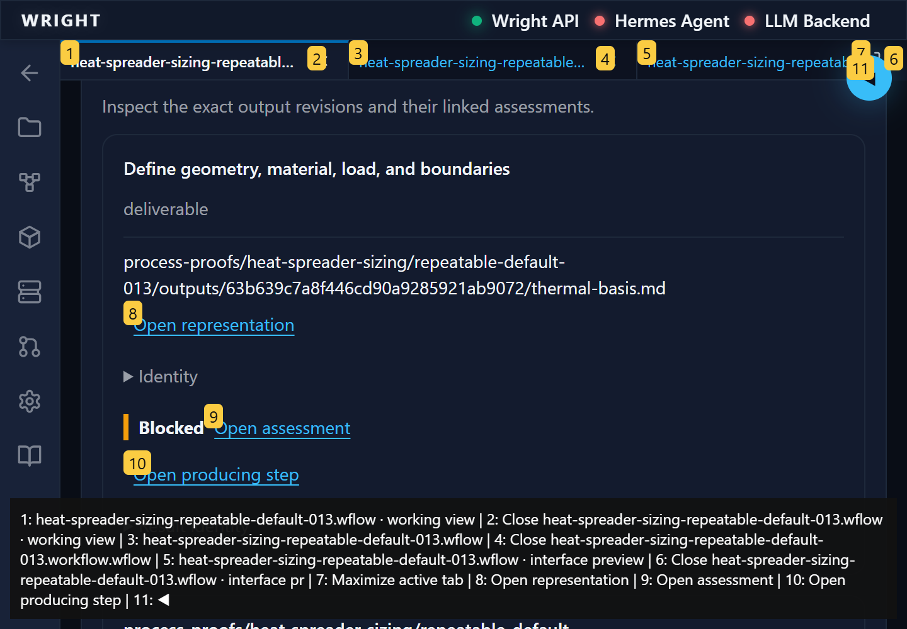
Open workflow returns to the unchanged accepted source and diagram within the zoomed workspace.
Expected: Same accepted source; browser zoom still 2.
Actual: Exact accepted source and existing diagram remain available; browser tab zoom remains 200%.
annotated 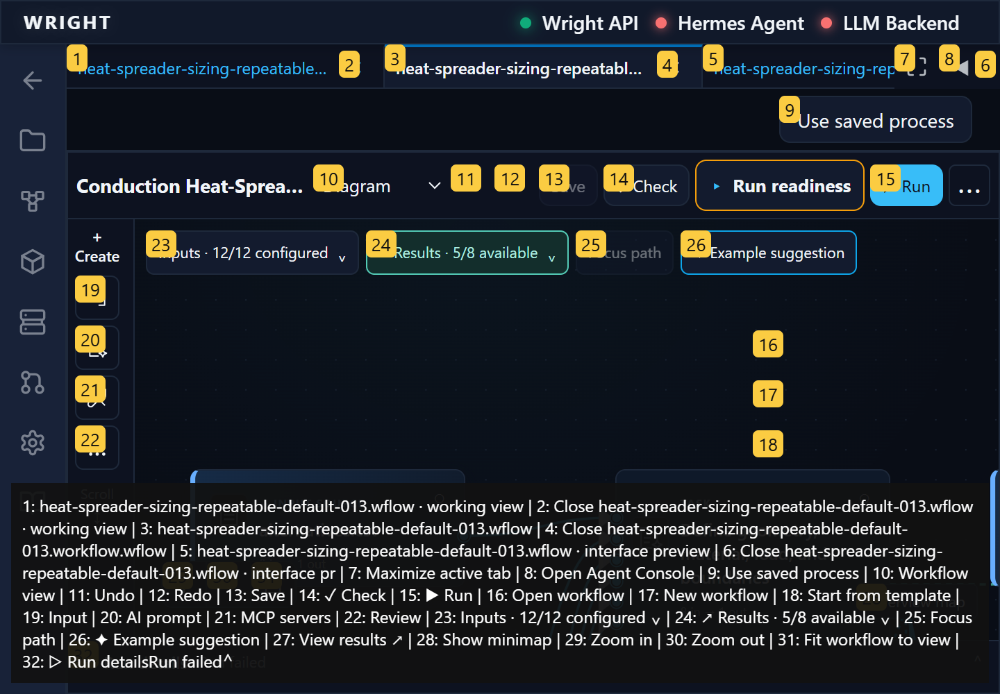